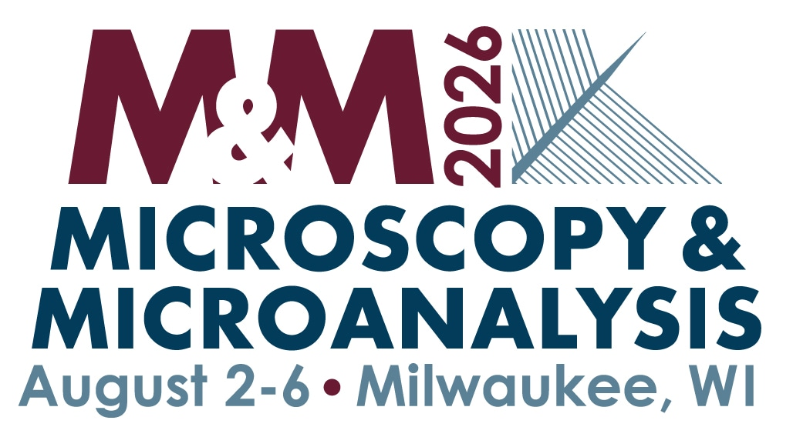
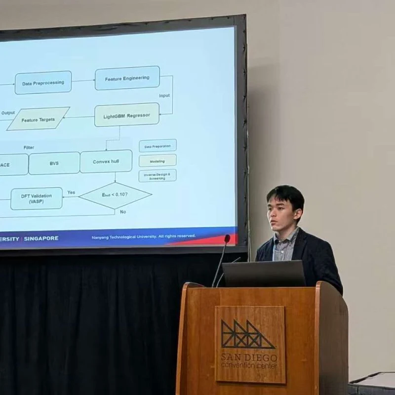

2026
Composition-Level Prioritization of Lithium-Ion Cathode Candidates
Wang, T.-W.; Millner, G.; Wang, Z.; Zhou, W.; Chen, E. Y.-S.
Under review at cScience.
Research outputs
Work on quantitative microscopy, materials informatics, and the relationships between composition, structure, and properties.
Publications & research outputs
Wang, T.-W.; Millner, G.; Wang, Z.; Zhou, W.; Chen, E. Y.-S.
Under review at cScience.
Millner, G.; Wang, T.-W.; Shen, S.; Li, Y.; Chen, E. Y.-S.
Under review at Materials Today Communications.
Chou, C.-Y.; Zeng, X.-Y.; Shen, S.; Wang, T.-W.; Chen, E. Y.-S.; Juang, J.-Y.
Submitted to the Journal of Alloys and Compounds.
Millner, G.; Wang, T.-W.
Conference paper and oral presentation, European Steel Technology and Application Days (ESTAD 2025), Verona, Italy. Related data and supplementary materials in DR-NTU Data.
Dataset · DOI: 10.21979/N9/NYRGAAConferences

Accepted abstract · 2026Wang, T.-W.; Millner, G.
Microscopy & Microanalysis (M&M 2026)
Milwaukee, WI, USA
Wang, T.-W.; Millner, G.
TMS 2026 Annual Meeting
San Diego, CA, USA

Wang, T.-W.; Zengyu, H.
International Conference of Undergraduate Research (ICUR 2025)
Singapore
Ongoing work
Wang, T.-W., et al.
Wang, T.-W., et al.
Jing, J.; Wang, T.-W., et al.
Zengyu, H.; Wang, T.-W., et al.